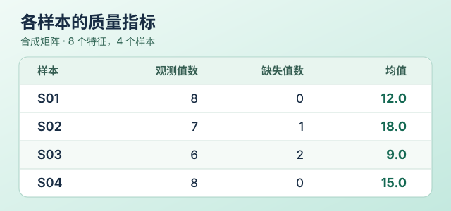
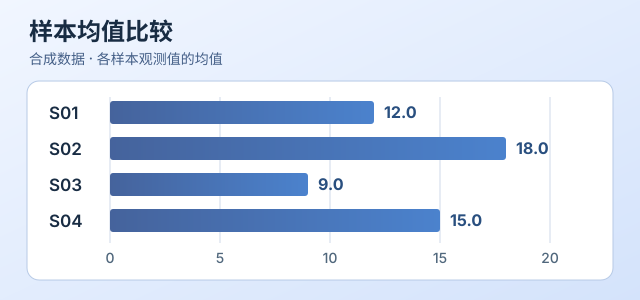
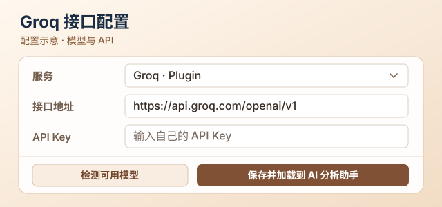

Zotero 风格研究助手
在分析页面边读论文边提问，用已有的 MiniMax 或其他模型整理研究笔记。
为你的分析工作台添加研究助手、分析方法与结果视图。
在分析页面边读论文边提问，用已有的 MiniMax 或其他模型整理研究笔记。

按样本统计观测值、缺失值、均值、标准差和变异系数。

把结果表里的样本均值画成条形图，快速比较样本间的差异。

把 Groq 接入 EMP 的模型选择器，用自己的 API Key 测试连接。
没有匹配的插件。请尝试其他关键词或类型。